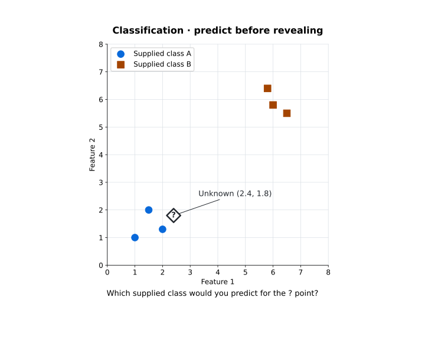
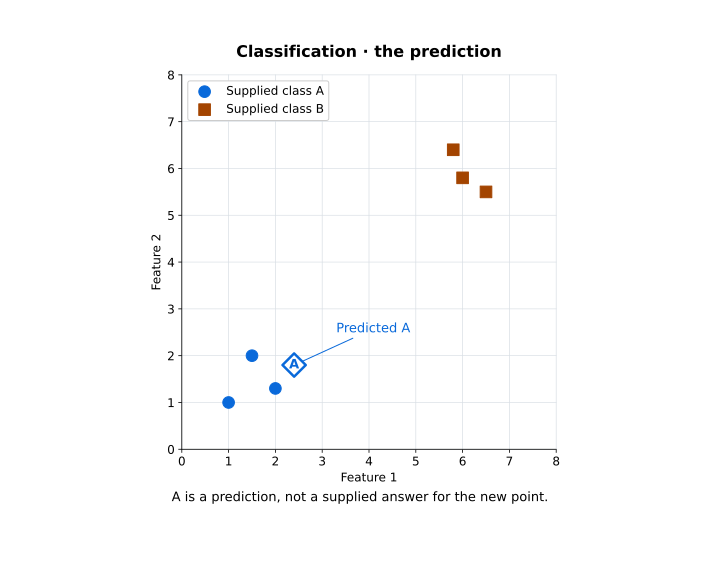
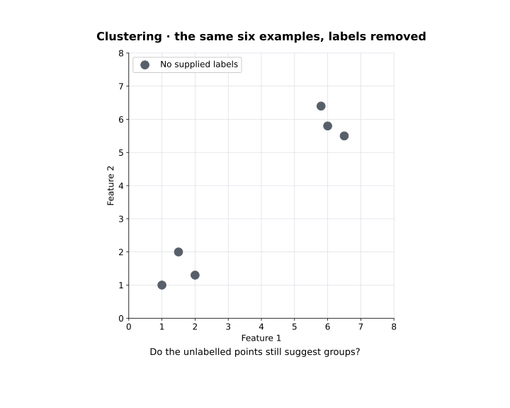
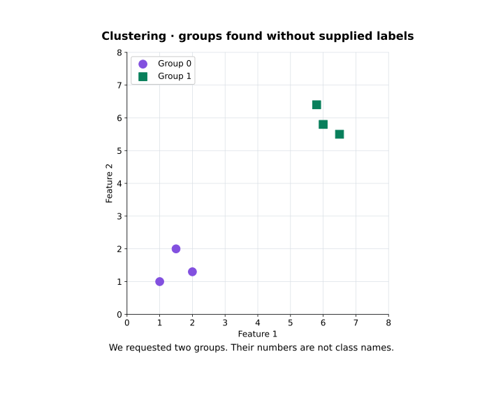

CT319 Artificial Intelligence · Week 8 · Learning from data
Week 8 — Learning from data
What does it mean for a machine to learn?
In Weeks 2 to 6 we built every part of the problem-solver ourselves. We chose how to represent the problem, which moves were allowed, how to search, how to score a state and how to improve a population. The machine followed those instructions exactly, and it could never do better than they allowed.
This week we ask a different question:
What if we gave the machine data or experience, and asked it to improve from that?
That question is the starting point for machine learning.
That question is the starting point for machine learning. This week covers five topics:
- From rules to learning — how a program can learn its behaviour from examples instead of following rules we wrote.
- Data becomes evidence — what examples, features and labels are, and why data has to be prepared.
- Learning from answers — supervised learning, with a small classification example you can run.
- Different feedback — learning with labels, without labels and from rewards, with a small clustering example.
- Learning is not remembering — why doing well on the training data is not enough.
Keep three ideas separate as you read:
Machine learning does not remove design decisions. It moves them: instead of writing the rules, we now choose the data, the features and the way success is measured.
From rules to learning — what changes when the machine learns from experience?
Hand-written rules are brittle: they stop working as soon as the world changes.
Suppose we want a program that separates spam from normal email. One way is to write the rules ourselves:
IF subject contains "FREE MONEY" THEN spam
IF message contains 5 or more links THEN spam
IF sender unknown AND text has "urgent" THEN spamThis breaks down quickly. A normal email can contain the word urgent. A spammer can simply stop writing FREE MONEY. Every time spammers change tactics, someone has to notice and write another rule. Hand-written rules are brittle: they stop working as soon as the world changes.
Learn from examples instead
Now suppose we have a collection of old emails, and we already know which ones were spam:
message 1 -> spam
message 2 -> not spam
message 3 -> not spam
message 4 -> spamThe algorithm is the procedure; the model is the result.
We give these examples to a learning algorithm. The algorithm studies them and produces a model. The model is the part we actually use: give it a new email and it returns a prediction, spam or not spam. The algorithm is the procedure; the model is the result.
So the important change is this:
Part of the decision behaviour is learned from data, rather than specified case by case by the programmer.
This does not mean the computer works without rules or human decisions. People still decide what problem to solve, what data to collect, how to represent it, which learning algorithm to use, how to measure success, and when the model is good enough to use. Machine learning changes where some of the behaviour comes from. It does not replace engineering judgement.
Search and learning are different questions
In the first half of the module we wrote the rules for how a machine explores its options. Breadth-first search expands the oldest state on the frontier. Hill climbing moves to a better neighbour. A genetic algorithm selects, recombines and mutates a population. We designed every one of those rules.
The line between the two is not sharp. Learning algorithms use optimisation inside them, and search can be one part of a larger learning system. But here is a simple way to tell them apart: search explores possible solutions using rules we give it; machine learning improves its behaviour using data or experience.
AI, machine learning and deep learning
People often use these three terms as if they meant the same thing.
People often use these three terms as if they meant the same thing. They do not:
So everything we did in Weeks 2 to 6 was AI too. It just was not machine learning.
Artificial Intelligence (AI) is the whole field. It includes search, optimisation, reasoning and planning, as well as learning. Machine Learning (ML) is the part of AI where a system improves from data or experience, instead of following rules written for every case. Deep Learning is one part of machine learning: the methods built on neural networks with many layers.
So everything we did in Weeks 2 to 6 was AI too. It just was not machine learning.
Why did machine learning become so prominent?
One big reason is data.
One big reason is data. Everyday systems now record huge amounts of it: shop transactions, sensors, websites, phones, images and video, text, location data and scientific instruments. This is often called Big Data.
Big Data does not just mean "a lot of rows".
Big Data does not just mean "a lot of rows". It is usually described with a set of words that begin with V, and each one points to a different challenge:
| Idea | The question it asks |
|---|---|
| Volume | How much data is there? |
| Variety | What forms does it take? |
| Velocity | How quickly does it arrive or change? |
| Veracity | How trustworthy is it? |
| Value | Does it contain information useful for this problem? |
More data does not automatically help. A million poor-quality records can be less useful than ten thousand relevant ones. A fast stream of wrong data is still wrong. A dataset can be huge and still tell us almost nothing about the decision we care about.
More data is not the same thing as better learning.
The data also has to be relevant, usable and trustworthy enough for the task.
Why this matters this week
Search is still useful. This week adds a second way to build intelligent behaviour: instead of writing every decision ourselves, we let patterns in data shape a model. That leads straight to the next question:
What exactly counts as data for a learning system?
Data becomes evidence — what exactly do we give the learner?
Take a bank that decides whether to approve loans. It keeps records of past applications, and it knows whether each loan was repaid:
| Income | Savings | Existing debt | Loan later repaid? |
|---|---|---|---|
| €34,000 | €3,500 | €7,000 | Yes |
| €61,000 | €21,000 | €2,000 | Yes |
| €28,000 | €800 | €14,000 | No |
| €47,000 | €5,500 | €18,000 | No |
Each row is one example (also called an instance). Income, savings and existing debt are features: the facts recorded about each applicant when they applied. Whether the loan was repaid is the target, the thing we want to predict. Its value, Yes or No, is the label.
Timing matters here:
The features must be available when the new application is considered — before anyone knows its outcome.
A prediction about repayment can help a person decide on a loan. It is not the decision itself.
A prediction about repayment can help a person decide on a loan. It is not the decision itself.
What forms can the examples take?
Data comes in different forms. Four common ones are:
- Numerical — a measurement, such as salary or temperature, or a count, such as the number of missed payments.
- Categorical — a group something belongs to, such as payment type or product category. It is a label, not an amount.
- Time series — values recorded over time, such as hourly demand or daily sales. The order of the values matters.
- Text — an email or a review. It has to be turned into something a computer can work with before anything can be learned from it.
So the question from Week 2 still applies: what must we record for this task?
These forms can overlap: a time series is usually a sequence of numbers. Images, audio and networks also have to be turned into a form the computer can learn from. So the question from Week 2 still applies: what must we record for this task?
Raw data is rarely ready to learn from
Each of these choices changes what the learning algorithm actually sees.
Real data is messy. In the loan table, €35k and 35000 might be the same income written two different ways. N/A means the value is missing, not that it is zero. Duplicate applications and wrong dates can distort the results without anyone noticing.
Getting data ready is called preparation. It means checking the records, fixing errors, deciding what to do about missing values, turning categories into a usable form, choosing which features to keep, and sometimes rescaling the numbers. Each of these choices changes what the learning algorithm actually sees.
Building the model is only one step in a longer process. Standard methods such as CRISP-DM and KDD describe that process in detail. Its basic shape looks like this:
Is an available feature an appropriate feature?
Go back to the bank. As well as financial details, a lender might hold a customer's shopping history, location data, phone records or social-media activity.
If a feature is available, should the model use it?
Before using a feature, check four things. Is it relevant to the question? Is the measurement good quality? Could it carry bias, or reveal sensitive information indirectly? And is it appropriate to collect and use at all? A feature can improve the predictions and still be invasive, out of date, or missing for the next applicant.
Available data is not automatically appropriate data.
We come back to the ethics of this in Week 11.
The tool landscape
You do not need to install Weka this year.
Several tools are commonly used for this kind of work:
| Tool | Useful for |
|---|---|
| Python | general programming, data processing, machine learning and automation |
| scikit-learn | classical machine-learning algorithms behind one consistent Python API |
| R | statistics, data analysis and visualisation |
| Excel | small-scale tabular exploration, calculation and charting |
| Weka | GUI-based experimentation with classical machine-learning algorithms |
You do not need to install Weka this year. The practical examples use Python and scikit-learn. R and Excel are still widely used for data analysis.
The first choice is the question, not the software. Data analysis usually asks one of four kinds of question:
| Question | What it asks |
|---|---|
| Descriptive | What happened? |
| Diagnostic | Why might it have happened? |
| Predictive | What is likely to happen? |
| Prescriptive | What action should we consider? |
Machine learning helps most with prediction and with finding patterns. Many descriptive and diagnostic questions can be answered with a summary, a chart or a spreadsheet, with no learned model at all.
That difference splits machine learning into its main types.
Why this matters this week
We now have the basic ingredients: examples, features and, sometimes, labels. Whether we have labels matters a great deal. Sometimes we know the correct answer for past examples. Sometimes nobody does. That difference splits machine learning into its main types.
Learning from answers — what does supervised learning look like?
Go back to the email example. For each old email, someone already knows whether it was spam. So the learning algorithm receives two things for every example: the features (what the email contains) and the correct answer (spam or not spam).
Learning from examples with known answers is called supervised learning.
“Supervised” does not mean a person watches every prediction. It means the training examples carry the outcomes the learner is supposed to model.
Classification and regression
There are two main kinds of supervised learning. The difference is the kind of answer being predicted:
An easy way to tell them apart: if the answer is a category, it is classification; if the answer is a number, it is regression. We look at classification in detail next week.
A classification teaser — which class would you predict?
The diamond marked ? is a new example at
(2.4, 1.8).
Here are six labelled examples. Each has two numerical features, so each can be drawn as a point. The diamond marked ? is a new example at (2.4, 1.8). It is not one of the six, and nobody has told the computer its class.

Would you expect the unknown point to be A or B — and what in the picture supports that?
Make your own prediction, then click Run and reveal (or press Space).
In this small example both features use similar scales. That matters for methods that compare distances, because a feature measured in bigger numbers can dominate the distance. We come back to this in Week 9.
You can run this example yourself:
python -m pip install scikit-learn matplotlib
python learning_demo.py --mode classificationThe window first shows the unknown point. Make your own prediction, then click Run and reveal (or press Space). The computer's prediction appears on the same point.
The machine-learning part is only three lines:
from sklearn.neighbors import KNeighborsClassifier
model = KNeighborsClassifier(n_neighbors=3)
model.fit(X, y)
prediction = model.predict(unknown)
fit(X, y)gives the labelled examples to the algorithm.predict(unknown)asks the trained model about the new point.
X holds the six points, y holds their labels (A or B), and unknown is the new point. fit(X, y) gives the labelled examples to the algorithm. predict(unknown) asks the trained model about the new point. The rest of the script just draws the plots.

But one sensible-looking prediction tells us nothing about how well the model works on other points.
The new point was given one of the classes we supplied, A or B. That is what classification does. But one sensible-looking prediction tells us nothing about how well the model works on other points. The method used here, k-nearest neighbours, is covered in Week 9.
What did the machine actually learn?
Be careful how you describe this. The model did not learn that A is good or that B is bad. It used the link between the feature values and the labels it was given, through one particular algorithm. This algorithm, k-nearest neighbours (KNN), simply stores the training examples and compares each new point with them. So "training a model" does not always mean finding an equation.
If you change the data, the result can change. If you change the features, the algorithm or the labels, the result can change too. Every prediction depends on a chain of choices:
- data
- representation
- learning algorithm
- model
- predictions
A model always depends on the choices that produced it. Yet when we describe a system, we usually name only the highlighted step.
Now suppose the model gets every past application right. Does that make it a good model?
The loan example becomes supervised learning
Back to the bank. If each past application is recorded with its outcome, REPAID or NOT REPAID, then predicting the outcome for a new applicant is a supervised classification problem.
Now suppose the model gets every past application right. Does that make it a good model?
Not necessarily. Learning is not remembering explains why.
Why this matters this week
Supervised learning works well because the labels tell the algorithm exactly which outcome matters. But labels are often hard or expensive to get. There may be millions of images, but that does not mean anyone has labelled them correctly. There may be millions of customer records, but nobody may have sorted them into the groups we care about.
So what can a learning system do when there are no answers to learn from?
Different feedback — what does the learner actually receive?
So far, the learning algorithm received examples and their correct answers. Other kinds of learning receive something different:
| Learning setting | What the learner receives | The question it can ask |
|---|---|---|
| Supervised | examples + supplied targets or labels | Can I predict the target for a new example? |
| Unsupervised | examples without supplied labels | Is there useful structure in this data? |
| Reinforcement learning | actions, consequences and reward from interacting with an environment | Which actions lead to better long-term reward? |
What feedback is available — an answer for an example, no supplied label, or a consequence of an action?
In unsupervised learning there are no labels at all.
In unsupervised learning there are no labels at all. Reinforcement learning is different again: the learner gets rewards based on what happens after it acts. That is not the same as simply having data without labels.
Remove the labels — what remains?
Take the same six points from the classification example and remove their labels. Every point stays exactly where it was. The diamond is left out, because it was never one of the six.

Can you still see structure? What grouping would you expect, without being told A or B?
Clustering means grouping examples that are similar to each other, based on their features. Notice that the question has changed. We are no longer asking for the class of one new point. We are asking what structure exists across all the examples.
A clustering teaser — run, then reveal the groups
The model did not work out how many groups there are — we told it.
You can run the clustering version of the same example:
python learning_demo.py --mode clusteringPredict a grouping first, then click Run and reveal. The six grey points are coloured by group. The code uses X but no y, because there are no labels:
from sklearn.cluster import KMeans
model = KMeans(n_clusters=2, random_state=42, n_init=10)
groups = model.fit_predict(X)Notice that we asked for two clusters. The model did not work out how many groups there are — we told it. The fixed settings (random_state and n_init) make the result the same every time you run it. How K-means works is covered in Week 10.

Each group has three points. Here the groups match the original classes, but only because this small example was designed that way. In general, clustering does not recover known classes.
If clustering finds four groups, that does not prove there are four real types of customer.
Running python learning_demo.py with no mode shows both examples one after the other, pausing before each reveal.
Same data, different question
Imagine customer records labelled churned (the customer left) or did not churn. With those labels, we can use supervised learning to predict whether a new customer will leave. Without the labels, we can still cluster the same records to find groups of customers who behave in similar ways. Which approach we use depends on the question we are asking, and on whether labels exist.
If clustering finds four groups, that does not prove there are four real types of customer. The features, the algorithm and its settings all affect the result, and someone still has to judge whether the groups are useful. Week 10 looks at this in detail.
A third kind of feedback — reinforcement learning
In reinforcement learning, an agent takes actions in an environment. After each action it receives a reward that tells it how well things went.
So a reward is not the same as a label.
Nobody tells the agent the correct action in each situation. It has to find out, by trial and error, which actions lead to more reward over time.
A game shows the difference. In supervised learning, the learner might receive many board positions, each labelled with the best move. In reinforcement learning, the agent makes a move, the game carries on, and only at the end does it get a win, a loss or a score.
So a reward is not the same as a label. A label gives the right answer for one example. A reward tells the agent how things turned out, sometimes long after the action that caused it.
The word "learning" covers three very different things.
Why this matters this week
The word "learning" covers three very different things. A classifier learns from labelled examples. A clustering algorithm looks for structure without labels. A reinforcement-learning agent learns from rewards over many attempts. All three face the same question, and it is the subject of the next section: how do we know that what was learned is actually useful?
Learning is not remembering — how do we know the model learned something useful?
Suppose we train a model on 100 past examples, and it gets all 100 right. That sounds excellent. Now we give it 20 examples it has never seen, and it gets only 9 of them right.
100 out of 100 on the training examples is evidence of fit to those 100 cases. It is not evidence that the model will work on anything else.
The point is generalisation
A useful model learns something that also works on examples it has not seen. This is called generalisation, and it is what we are really aiming for:
- training data
- learn a pattern
- new unseen data
- still useful?
Only the highlighted step tests the model. A model can get through every earlier step and still fail here.
So the goal is not to perform perfectly on the training data. The goal is to learn enough useful patterns to perform well on new cases from the same problem.
Overfitting
Overfitting happens when a model learns details or noise that only apply to its training examples and do not carry over to new data. The warning sign is a model that does very well on its training data but much worse on similar new data.
Think of a student who prepares for an exam by memorising the answers to ten practice questions. If the exam uses exactly those ten questions, they do very well. If the questions change even slightly, they are stuck.
Memorising the training examples is not the same thing as generalising to new ones.
Storing the training examples, as KNN does, is not overfitting in itself. What matters is whether the predictions work on new data. In Week 9 we test this properly, by keeping some of the data aside as a test set.
What if the learning signal is wrong?
A model can only be as good as what it learns from. In the loan example, some repayment labels might be wrong. Some groups of applicants might be missing from the data. Past approval decisions might have treated some people unfairly. A model that copies those records copies their problems too.
- Wrong labels or biased past examples teach the model the wrong lessons.
- Weak evaluation makes us more confident than we should be.
- A badly designed reward teaches the wrong behaviour, and the agent may learn it very well.
The same applies to the other kinds of learning. A neat-looking set of clusters does not prove the groups mean anything. An agent rewarded only for speed may learn to be fast and careless. In each case, the system gets better at what it is measured on, but misses what we actually wanted.
A system can technically learn, and still learn the wrong thing.
That is why we check the data, the feedback and the evidence that the system is useful, not just the score. Week 11 returns to this.
Why this matters this week
Here is how this week fits with what came before:
- Week 2 · representation
- Week 3 · blind search
- Week 4 · heuristic
- Week 5 · local search
- Week 6 · population
- Week 8 · learning
The words are new, but the habit is the same. Always ask: what information does the system receive, how does that information change its behaviour, and what evidence shows the result is useful?
The demonstration
The program shows the data first, and only runs the model when you ask for the reveal.
📦 learning_demo.py — runs both examples from this page on one small made-up dataset. Needs scikit-learn and matplotlib; there is nothing else to download.
python -m pip install scikit-learn matplotlib
python learning_demo.pyThe program shows the data first, and only runs the model when you ask for the reveal. That way you can make your own prediction before you see the answer. Use --mode classification or --mode clustering to open one example at a time.
Before Week 9
We have now met the three main kinds of learning — supervised, unsupervised and reinforcement — and two small examples: a classifier learning from labelled points, and a clustering algorithm finding groups without labels.
Next week we look at classification in detail:
If we know the classes of previous examples, how can a machine decide the class of a new one?
That is where Week 9 begins.
Quick revision
If you can answer these without reopening the page, you have the core of this week.
If you can answer these without reopening the page, you have the core of this week.
- [WK-08-01] What changes when part of a system's decision behaviour is learned from data rather than specified case by case?
- How do AI, machine learning and deep learning relate to one another?
- Why is “more data” not automatically the same thing as “better learning”?
- [WK-08-02] What is the difference between an example, a feature and a target or label?
- Why is data preparation part of machine learning rather than unrelated housekeeping before it?
- [WK-08-03] What distinguishes classification from regression?
- What information makes a learning problem supervised?
- [WK-08-04] What information is missing in an unsupervised-learning problem?
- Why do cluster identifiers not automatically correspond to real-world class labels?
- What feedback does a reinforcement-learning agent receive, and how does it differ from a label?
- [WK-08-05] Why does perfect performance on training examples not prove that a model will work on new ones?
- What does generalisation mean, and what would you have to do to measure it?